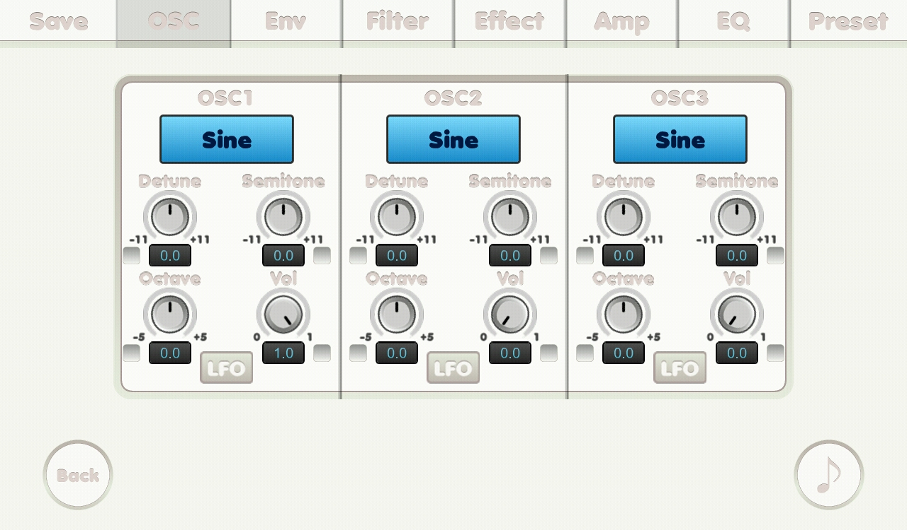

{% include JB/setup %}
OSC screen

- Sound waves
-
- Sine wave
- Sawtooth wave
- Square wave
- Triangle wave
- White noise
- Noise
- Detune knob: detune. increment or decrement 1 / 12 semitone
- Semitone knob: semitone. increment or decrement half tone
- Octave knob: octave. increment or decrement 12 semitones
- Volume knob: volume. Turn this knob will turn the OSC on.
- Check boxes: if it was checked its related number is affected by mutate feature.
- LFO button: leads you to LFO screen.